szigorlat
I.félév
II.félév
magzati keringés
- placentából "gazdag" vér jön a v.umbilicalis-on keresztül
- májnál a ductus_venosus-on keresztül a v.cava_inferior-ba jut (kisebb része a sinus_portae-n át a v.portae-ba majd a májba)
- ezek végül a jobb pitvar-ba, ahol a foramen ovale-n egyből át is mennek a bal pitvar-ba
- innen a bal_kamra-ba ➜ aorta ➜ a.iliaca interna ➜ 2a.umbilicalis ➜ placenta
- eközben a v.cava_superior-ból érkező vér a jobb pitvarba megy (itt minimiálisan elegyedik a gazdag placentából jövővel)
- továbbmegy jobb_kamra-ba, ahonnan a truncus_pulmonalis-on keresztül a tüdőbe menne
- azonban tüdő fejletlen, így minimális jut oda, helyette a.pulmonalis_sinistra, majd ductus_arteriosus-on átjut aorta-ba
- így a magzat "felső részébe" jut a gazdagabb vér, alsóba már kevésbé
- tüdőbe sok vér jut ➜ jobb_pitvarba sok vér jut vv.pulmonales-eken keresztül
- nő a nyomása, ezért a septum_primumot hozzányomja a septum_secundumhoz
- ezért nem jön át több vér jobb pitvarból balba már
- foramen ovale így átalakul fossa ovalis-sá
- ezenkívül
- ductus_arteriosus átalakul lig.arteriosum
- ductus_venosus átalakul lig.venosum
- foramen_ovale ➜ fossa_ovalis
- ductus_venosus ➜ lig.venosum
- ductus_arteriosus ➜ lig.arteriosum
lényege?

születés után mi történik magzati keringéssel?
shunt-ök ➜ felsorolás? későbbi sorsuk?
emésztőrendszer
- befűződés következtében 3 részre oszlik
- primitív bél (ez van embrióba, többi kívül)
- szikzacskó
- allantois
- primitív belet mi köti össze a szikzacskó-val ► ductus omphaloentericus
- mi béleli őket ► endoderma
- endoderma ➜ hám
- mesoderma ➜ többi
- somatopleura ➜ peritoneum parietale
- splanchnopleura ➜ peritoneum viscerale
- mesenterium ventrale ➜ hol? ► bélcső és elülső hasfal közt, csak duodenumig tart
- mesenterium dorsale ➜ hol? ► bélcső és hátsó hasfal közt, végigköveti a belet
- mesogastrium ventrale ► májtelep
- mesogastrium dorsale ► pancreas + lép telepe
- mesogastrium ventrale ► lig.falciforme hepatis, omentum minus(lig.hepatoduodenale + hepatogastricum)
- mesogastrium dorsale ► lig.gastrolienale, lig.phrenicolienale, omentum majus
- mesenterium dorsale származékai ► mesenterium, mesocolon trasnversum, mesosigmoideum, mesoappandix
- urachus ➜ magzat húgyhólyagját kötötte össze az anya kergingésével
- ebből végül lig.umbilicale medianum lesz ➜ apex_vesicae-ból indul és a köldökben(umbilicum) végződik
- jobbra fordul 90°ot (fenntről nézve)
- bal n.vagusX így elé kerül, jobb pedig mögé
- kezdetben van egy ventrális és dorsális pancreas csomó
- (ventrális előtt van még epehólyag és máj, de azok egyben feljebb is vannak, így nem ábrázolható a horisontalon)
- a jobbra fordulás következtében a ventrális beleolvad a dorsalisba, így
- ventrálisból ➜ processus_uncinatus + caput egy része
- dorsalisból ➜ caput többi része + corpus + cauda
- kivezetőcsövek pedig
- dp.major ➜dorsalis ductusának distalis része + ventrális ductusa
- dp.accessorius ➜dorsalis ductusának proximális része
- mesenterium_ventrale csak a felső részénél van ➜ tehát csak ott folytatódik a peritoneum-kettőzet elől is (lig.hepatoduodenale)
- gyors növekedés és kevés tér következtében C alakot vesz fel, és csak a pars_horisontalis_superior marad intraperitoneális
- bélkacs ➜ kanyar rész, melyből ductus_omphaloentericus ágazik ➜ ebből lesz
- 13 coecum & appendix
- előtte lévő részből jejunum & ileum
- utána lévő részből colon_transversum & colon_ascendens
- utóbél többi részéből ➜ colon descendens, colon sigmoideum, rectum
- 1 a.umbilicalis
- 2 a.mesenterica_superior
- 3 truncus_coeliacus
- 4 truncus_coeliacus
- 5 ductus_omphaloentericus (=)
- 6 allantois
- 7 hepar
- 8 diaphragma
- 9 cloaca
- 10 lig.falciforme_hepatis
- 11 omentum_minus
- 12 mesogastrium_dorsale !!!
- 13 kiöblösödés, melyből lesz a coecum & appendix
- 270°ot forog az a.mesenterica_superior körül
- iránya ➜ hátulról nézve óramutató-járással megegyező
- közben másodlagos bélhurkok is keletkeznek jejunum & ileum résznél
- megjelenik coecum colon_descendens/transversum
- coecum még fenntvan a máj alatt ➜ colon_ascendens később fejlődik ki, és "tolja le"
- septum_urorectale kettéválasztja cloacat (lásd urogenital-fejlődés)
- így keletkezett "hátsó részből" lesz a rectum
- canalis_analis
- linea_pectinea feletti rész [c.a.2/3a] utóbélből származik(endoderma)
- linea_pectinea alatti rész [c.a.1/3a] proctodeumból származik(ectoderma)
- 1 velőcső
- 2 aorta_dorsalis
- 3 aorta_abdominalis
- 4 v.cava_inferior
- 5 ren
- 6 gaster
- 7 hepar
- 8 n.vagus
- 9 lien
- 10 pancreas
szikzacskó sorsa?

tápcsatorna felosztása (mely csírahámból)
-
tápcsatorna ➜ primitív bél összenyílik a stomodeum és proctodeum-mal
| stomodeum | ectodermális |
| membrana_buccopharyngea | |
| endodermális | |
| előbél | |
| középbél | |
| utóbél | |
| membrana_cloaca | |
| ectodermális | |
| proctodeum |

miből származik ➜ hámja, ktsz, hashártya, izom
hashártya két lemeze (parietalis,visceralis) miből származik
hashártya fejlődése
-
kezdetben:
'gyomor magasságában'
-
megjelennek az alábbiakban
ezután a gyomor és máj forgolódik így kialakulnak:
'lentebbi területeken'

allantois-ból mi lesz?
gyomor kezdeti lépései?
hasnyálmirigy

duodenum fejlődése?
bélkacs & utóbél (miből-mi lesz)?

bélkacs csavarodás?

rectum fejlődése? származása(endo/meso/ecto)?
fejlődéstan - horisontal

fejlődéstan - nyelv

alsó légutak
erek fejlődése
- aorta ► arcus aortae a IV.garatív
- aa.pulmonales ► VI.garatív
- truncus brachiocephalicus ► (képen látom)
- ACC ► (képen látom)
- ACI ► III.garatív
- ACE ► nem az aorta_primitiva_ventralisból jön létre, hanem vasculogenesisel, csak később beszájadzik
- a.subclavia dextra ► IV.garatív
aorta, aa.pulmonales, truncus brachiocephalicus, a.subclavia dextra/sinistra, ACC, ACI, ACE

vénák
III.félév
telencephalon
- szekunder agyhólyagok egyike, mely a prosencephalonból származik (lásd előbbi tétel)
- cerebrum
- telencephalonhólyag üregéből
- a hemispheriumhólyagok először hátrafele, utána lefele, végül előrefele nőnek
- ennek következménye a C-alak
- további részek C-alakja is ➜ ventriculus_lateralis, stb.
- sulcus_lateralis is így alakul ki
- limbikus_rendszer
- medialis felszínen keletkezik megvastagodás először fennt, majd a hátra/le/előre növekedés következtében C-alakot nyer és ez lesz az
- lateralis részéből ➜ insula
- medialis részéből ➜ telencephalikus basalis_ganglionok
- benyumoló idegpályák következtében a felszaporodott sejtanyag kettéválik
- nucleus_caudatus ➜ medialis
- nucleus_lentiformis ➜ lateralis
- claustrum is kialakul még (nucleus_lentiformis és insula között)
- capsula_interna lesz belőlük
- következménye ➜ telencephalon és a diencephalon itt rajzolt különválása már nyomaiban sem lesz látható; a két rész a capsula internának megfelelően tökéletesen összenő
mi?
2 telencephalonból mi lesz?
oldalkamra miből fejlődnek ki?
fejlődés lényege összefoglalva?

limbikus_rendszer hogy alakul ki?(1mondat)
kialakulóban lévő sulcus_lateralis mélyén felszaporodó sejtanyagból mi lesz?
telencephalikus basalis_ganglionok kialakulása?

telencephalikus basalis_ganglionok kialakulásakor benyumoló idegpályákból mi lesz? következménye?

képek
-
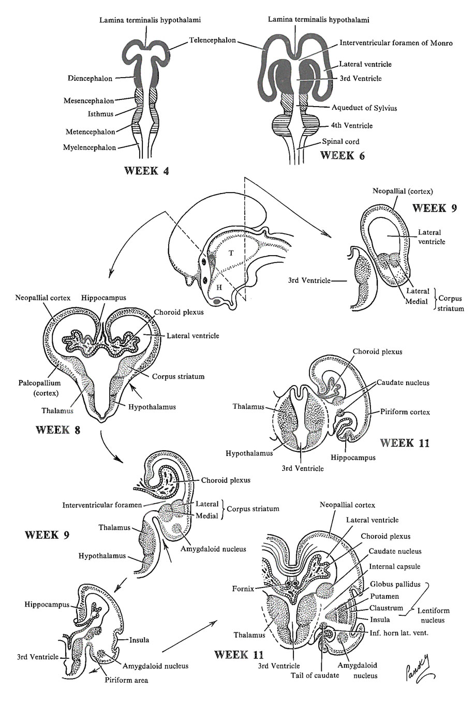
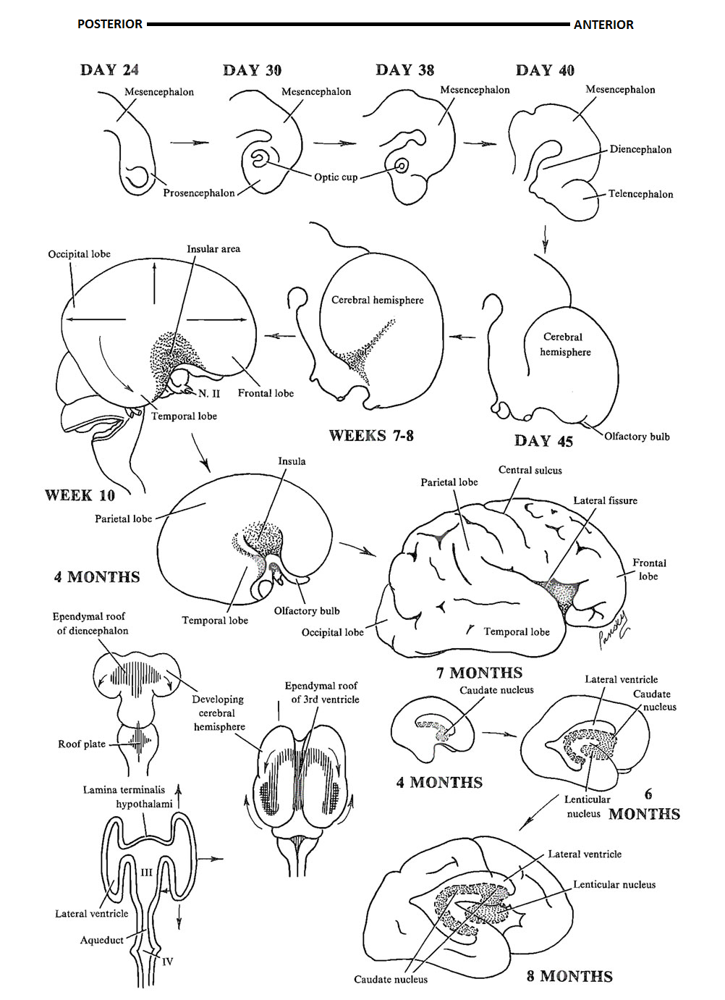
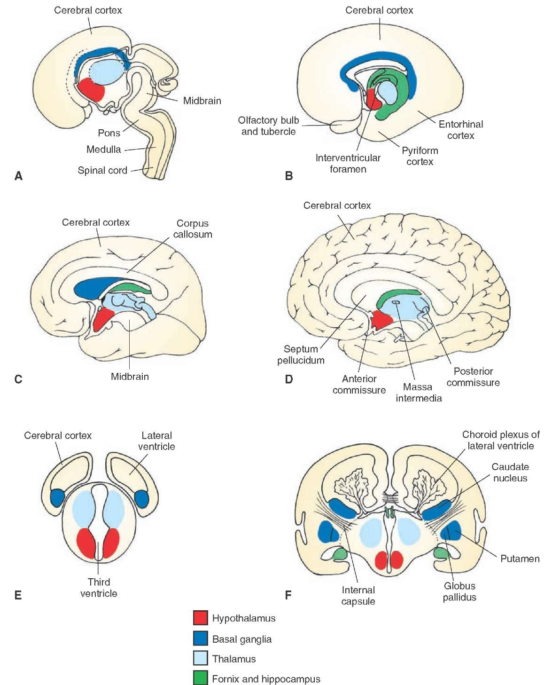
agyidegek fejlődésének lényege (röviden összefoglalva)
- gerincvelői motoros gyökerek kialakulásának megfelelően alakulnak ki ➜ III,IV,VI,XII
- kopoltyúívek idegei ➜ V/2, V/3, VII, IX, X, XI garatív-származékok táblázat
- I ➜ az ún. orrplacod primer érzéksejtekké differenciálódott, és az elsődleges orrgödörbe, majd a végleges orrüreg felső részébe került sejtjeinek nyúlványai, amelyek a bulbus olfactoriusban végződnek
- II ➜ a prosencephalon korai fejlődése során kitüremkedett részének a szemhólyag, később szemserleg retinalis idegsejtjeinek a szemserlegnyél vezetésével a diencephalon-mesencephalon határterületén az agytelepbe visszanőtt idegnyúlványai
- VIII ➜ Különálló specializált érzékszervi ideg, semelyik más agyideghez nem hasonlítható. Elsődleges érzősejtjei placod eredetűek, de nemcsak ezek, hanem a receptorokban elhelyezkedő másodlagos érzéksejtjeik is; ezek ugyanis a placod eredetű hallóhólyag származékai
placod lemez?
- A velőlemeznek velőcsővé való záródása során a velőlemez két oldala és rostralis pólusa mentén elhelyezkedő sejtek elkülönülnek az ektoderma lateralisabb részeitől. A záródó velőcsővel együtt a velőlemez két oldalán elhelyezkedő sejtek is lefűződnek az ektodermáról és a velőcsőtől dorsolateralisan kialakítanak egy-egy sejtoszlopot: ez a dúcléc (crista neuralis)
- A dúcléc rostralis folytatásába eső, a velőcső rostralis végét körbevevő ektodermacsíkot pedig, amelynek bizonyos részei a fejlődés során ugyancsak a mélybe burjánoznak, placod-lemez néven különítjük el az ektoderma többi részétől

Rajzok
primer agyhólyagok kialakulása?
-
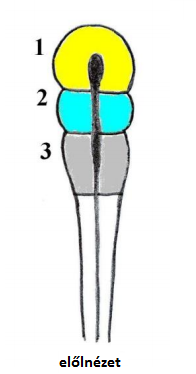
- először (25.nap) a velőcső cranialis végén három tágulat keletkezik ➜ ezek a primer_agyhólyagok
- (ekkor záródik a neuroporus_anterior)
1 prosencephalon
2 mesencephalon
3 rhombencephalon
szekunder agyhólyagok kialakulása?
-
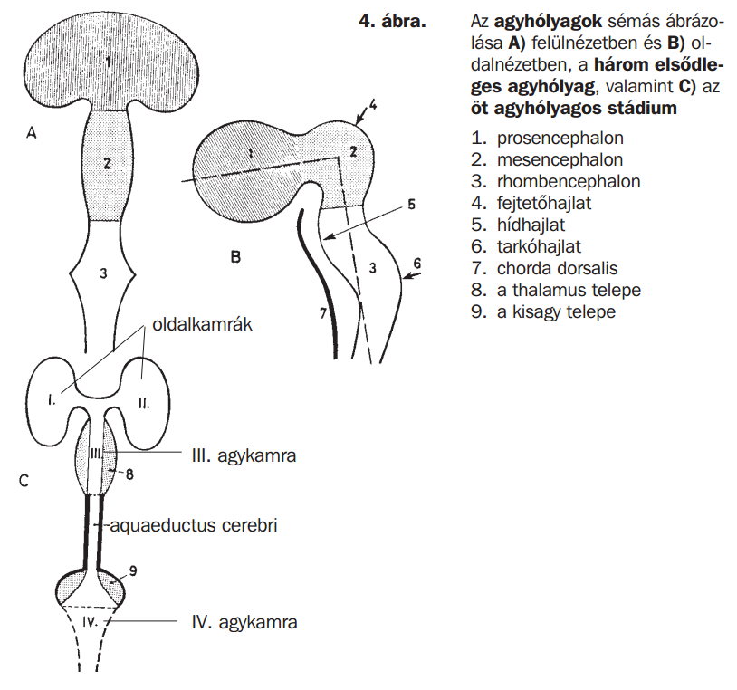
- ezután tovább tagozódnak szekunder_agyhólyagokká
- így prosencephalonnak 2része lesz
- 1 telencephalon
- 2 diencephalon
- illetve a rhombencephalonnak is 2része lesz
- 7 metencephalon
- 4 híd előtelepe
- 5 kisagy előtelepe
- 6 myelencephalon
- 10isthmus_rhombencephali választja el a 3mesencephalont a rhombencephalontól
- 2db görbület is megjelenik
- 9flexura_cervicalis
- 8flexura_cephalica
neurolatio - saggital ➜ "kiinduló+végállapot"
-
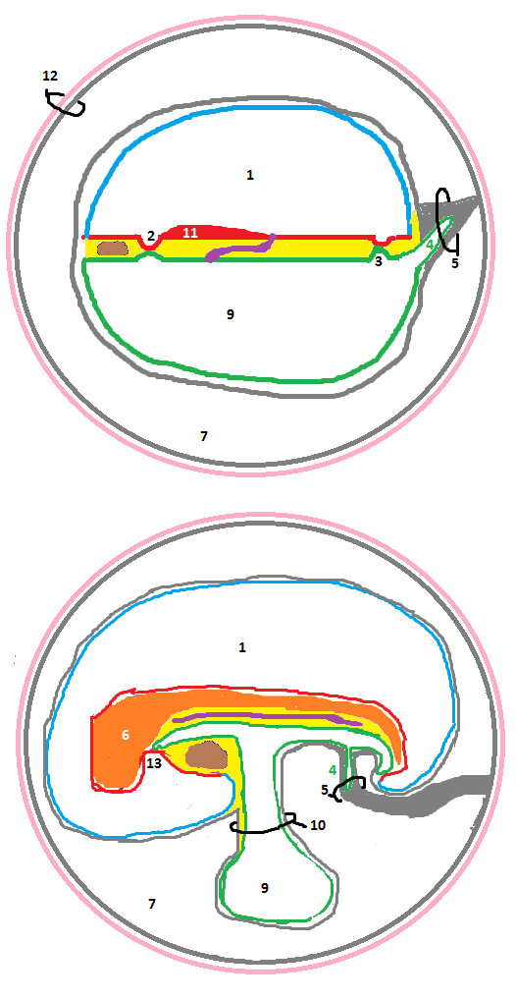
kék amnion
rózsaszín trophoblast
szürke extraembrionális_mesoderma
sárga intraembrionális_mesoderma
piros ektoderma
zöld endoderma
barna szívtelep
lila canalis_neuroentericus ➜ chorda_dorsalis
1 amnionüreg
2 membrana_buccopharyngea
3 membrana_cloca
4 allantois
5 testnyél
6 velőcső
7 extramebrionális_cölóma
8 hindgut
9 szikhólyag
10 ductus_omphaloentericus
11 velőlemez = neural_plate
12 chorion
13 elemi_szájöböl
neurolatio - vertical ➜ "kiinduló+végállapot"
-
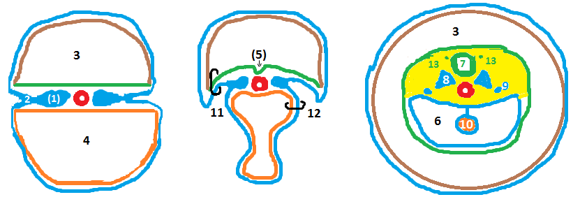
- chorion = extraembrionális_mesoderma + trophoblast
- funkc1 17. deciduák!!
- UROPOETIC ➜ KIDOLGOZNI MIBŐL MI LESZ!!
- gonádok pontosabb fejlődése (Langman + videók)
- SRY stb hormon (Langman + youtube)
- Végtagok és izomrendszer fejlődése!!
barna amnion
kék mesoderma
piros chorda_dorsalis
zöld ektoderma
narancs endoderma
1 ✽
2 oldallemezek
3 amnion-üreg
4 szekunder_szikhólyag
5 velőbarázda
6 () cölóma
7 velőcső
8 somita 
9 gononephrotom
10 bélcsatorna
11 somatopleura
12 splanchnopleura
13 crista_neuralis 
Kidolgozás
| Funkc-2 216 Az orrüreg és a melléküregek fejlődése
236 Az alsó légutak és a tüdő fejlődése
|
Sobotta-2 respiratoriusról ennyi 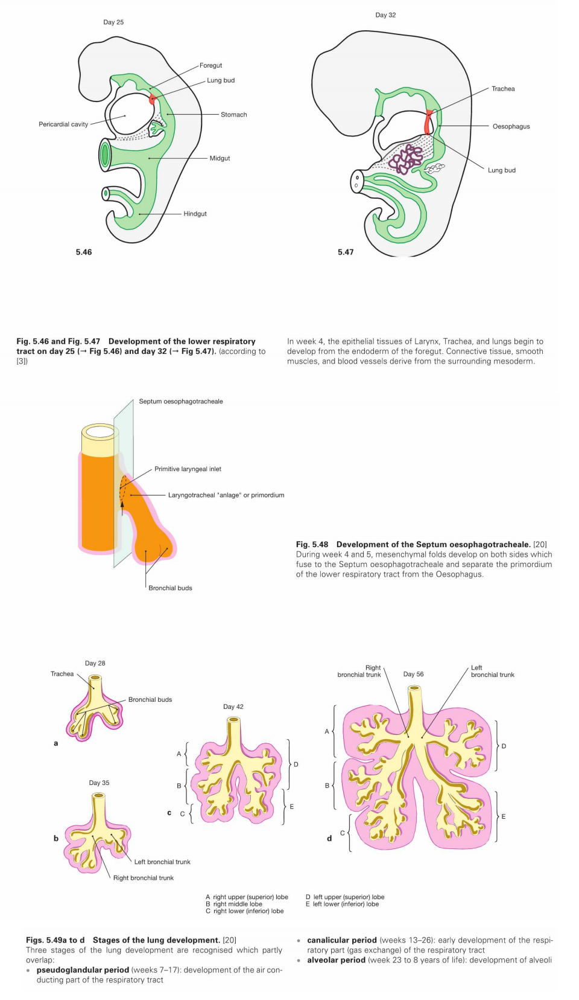
|
| tétel | funkc | kidolgozott tételek | egyéb |
|---|---|---|---|
| Neurolatio | phi vezér-2.1 | ||
| Velőcső korai tagozódása és differenciálódása | 3funkc 2.1 | phi vezér-2.3 | |
| Telencephalon fejlődése | 3.5.1 3funkc 7o-tól a végéig | phi vezér-2.3 | |
| Környéki idegrendszer fejlődése |
Kidolgozás 1-2.szemeszter
| apparatus_uropoeticus | 2.funkc | Langman | |
|---|---|---|---|
| organa_genitalia | 2.funkc | Langman | |
| apparatus_digastorius | 2.funkc | Langman | |
| apparatus_respiratoricus | 2.funkc | Langman | |
| NeuroAnat | phi.pdf | 2.funkc | Langman |
Nevek
-
tractus spinocerebellaris (Gowers)ventralis/dorsalis(Flechsig)
Vater-Pacini tapintótest
Kahler-szabály
Lissauer köteg
Philippe-Gombault háromszög
Schultze vesszőnyaláb
Flechsig ovális mező("flexig")
substantia_gelatinosa_Rolandi
sulcus_centralis_Rolandii
apertura_mediana_Magendii
apertura_laterale_Luschkae
Müller-cső
Wolff-cső
rete_testis_Halleri
Leydig-sejt
Sertolli-dajkasejt
lig.inguinale_Pouparti
glandulae_urethrales_Littré
Ebner-intimapárnák
Graaf-tüsző
glandula_vestibularis_major_Bartholini
Gartner-járat
columna_renalis_Bertini
trigonum_vesicae_Lieutaud("liötó")
foramen_interventriculare (Monroi)
Clark-Stilling-mag
aqueductus_mesencephali (Sylvii)
Renshaw-sejtek
Golgi-ínorsó
- 2db tubuloalveolaris, mucintermelő mirigy /csak férfinak van!/
- pars_membranacea(urethra) hátsó oldalán, a m.transversus_perinei_profundusba ágyazottan
- pars_spongiosaba(urethra) nyílik
- szerepe
- sikamlóssá teszi a makkot
- húgycső falának nyálkás bevonásával biztosítja a kilövellt ondó gyors és veszteségmentes áramlását
- = vesetestecske
- nephron alkotója ✽
- corpusculum_renale_Malpighi része
- glomerulust burkolja
- két lemeze ➜ lamina_parietalis & lamina_visceralis ✽
- lép vörös_pulpájának része, mely elválasztja az ott található sinusokat egymástól
- minden perifériás_nyirokszervekben ez van, kivéve lien
- magas endothelsejtek HEV bélelik ➜ lehetővé teszi, hogy az átvándorló lymphocyta előtt vagy mögött, de valahol mindig zárva legyen
- endotheleken speciális molekulák vannak, melyek a B/T-limfociták-at kiszűrik, hogy merre menjenek tovább
- periarterioláris limfatikus hüvely
- T-dependens
- lép fehér_pulpájában található
- a.centralis fúrja keresztül
- lépnek a fehér_pulpájában találhatók
- lépben egyes kapillárisokat(ún. orsóerek = a.ellipsoidea) veszi körül
- macrophagok alkotják
- epekapilláris ➜ Hering-csatorna ➜ ductus_biliferus = ductus_interlobularis ➜ ductus_hepaticus dexter/sinister ➜ ductus_hepaticus_communis
- extrahepatikus
- makrofág
- A-vitaminban gazdag zsírcseppeket tárol
- kötőszöveti rostokat is termel
- máj felületét körülvevő (vékony)kötőszövetes-tok
- porta_hepatis-nál befordul a máj állományába és elágazódik
- septum_interlobulare = lebenykét körülölelő (legkisebb) ágai
- lebenyke szögleteinél ✽ a septum_inberlobulare kiszélesedik
- ebben futnak a.+v.+ductus_interlobularis ✽
- Rappaport-májacinus = acinus_hepatis
- 2v.centralis + köztük lévő 2szöglet közti tér
- 3zónára osztva
- toxikus anyag jut be, akkor zóna_I hal el először
- ha kevés oxigén jut, akkor zóna_III hal el először
- t
- t
- nyelv "papillae_vallatae területén" található serosus-mirigyek
- thymus medullájában találhatók
- hámreticulum-sejtek alkotják
- belsejében keratin
- plica_circularis = Kerkring-redő
- csak vékonybélben található (tela_submucosat is tartalmaz)
- Lieberkühn-crypták alján találhatók
- eosinophil-szemcséket tartalmaz /kép-vékonybél/
- vékonybél és vastagbél lamina_propria-jaban lévő "árkok"
- alján Paneth-sejtek találhatók
- =folliculi_lymphatici_aggregati
- ileum tela_submucosa-jaban találhatók
- szövettanilag tonsilla
- duodenum tela_submucosa-jat tölti ki ➜ FONTOS JELE A PYLORUS ÁTMENETNEK
- glandulae_cardiacae = Schaffer-mirigy
- oesophagus-cardia átmenetnél a lamina_propria-ban található mucosus-mirigyek
- gyomor-bél traktus falában lévő idegfonat a stratum_circulare és stratum_longitudinale között
- izmok mozgását koordinálja
- gyomor-bél traktus falában lévő idegfonat a tela_submucosa-ban
- tunica_mucosa mirigyeinek működését szabályozza
- septum_nasi anteroinferior harmadában található ➜ 3artéria itt fedi át egymást ➜ a.labialis_superior a.ethmoidalis_anterior a.ethmoidalis_posterior
- ductus_choledochus beömlésénél lévő záróizom
- ductus_omphaloentericus fejlődési maradványa
- 0,5m-re a vakbélbe való beszájadzástól
- májat peritoneum borítja
- ez alatt közvetlenül található kötőszöveti réteg neve a Glisson-tok
- 2_funkc_191 + 193
- xyz
- xyz
- xyz
- Barret-zóna = Z-vonal ➜ cardia és pars_abdominalis(oesophagus) közti hámátmenet neve (határvonal)
- Barret-metaplázia ➜ rákos megbetegedés ➜ következtében általában a TENSLH lóg át a gyomor epitheliumára
- xyz
- xyz
- xyz
- Winslow-nyílás=foramen_epicloicum
- bursa_omentalis bejárata jobb oldalról
- határai
- elől ➜ lig.hepatoduodenale
- hátul ➜ lig.hepatoduodenale
- felülről ➜ lobus_caudatus alja
- alulról ➜ lig.duodenorenale
- truncus_coeliacus a.mesenterica_superior (közvetett) anastomosisa
- a.pancreaticoduodenalis superior/inferior anterior/posterior
- elő/középbél határ?
- xyz
- n.vagus(X) addig idegzi vastagbelet (paraszimpatikusan)
- xyz
- xyz
- xyz
- xyz
- gyomor-bél traktus falában lévő idegfonat a stratum_circulare és stratum_longitudinale között
- izmok mozgását koordinálja
- gyomor-bél traktus falában lévő idegfonat a tela_submucosa-ban
- tunica_mucosa mirigyeinek működését szabályozza
- rosszindulatú-daganat jele
- "dudor" alakul ki a bal fossa_supraclavicularis-ban
- következménye ➜ megfordulhat a keringés és májba jut a nyirok
- x
- x
- 3glandula_parotis kivezetőcsöve
- 5arcus_zygomaticus alatt egy harántujjal párhuzamosan halad előrefele
- 2m.masseter elé érve medialisan bekanyarodik
- 4m.buccinatort átfúrva a vestibulum_orisba torkoll
- glandulae_linguales egyike
- apex_linguae-ben található
- kevert
- páros
- 9 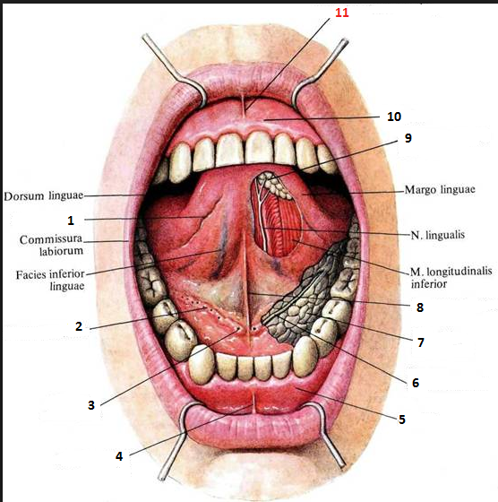
- 2tonsilla_tubaria ➜ 2ostium_pharyngeum_tubae_auditivae körüli folliculusok összesége 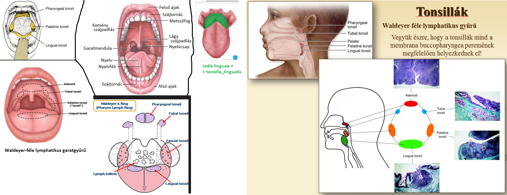
- Bitchat-zsírcsomó = corpus_adiposum_buccae ➜ bucca alkotója a m.buccinator mellett 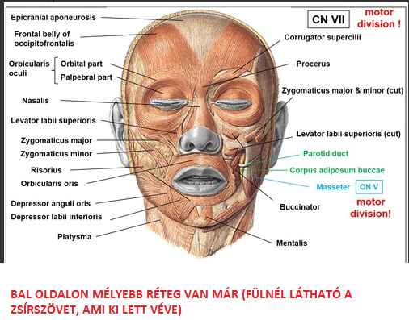
- hiatus_oesophagusnál lévő szalagkészülék
- oesophagust kapcsolja a diaphragmához
- 1 Calot-3szög
- 2 trigonum_hepatobiliare
- 3 hepar
- 4 a.hepatica_propria
- 5 ductus_hepaticus_communis
- 6 ductus_choledochus (=)
- 7 ductus_cysticus
- 8 vesica_fellea (=)
- 9 a.cystica
- 6 ductus_submandibularis = Wharton-vezeték
- glandula_submandibularis kivezetőcsöve, mely carancula_sublingualis3-ba juttatja a váladékot
- sulcus_lateralis_linguaeben halad
- A m.digastricus nyelvcsonton rögzülő ina a m.mylohyoideus hátulsó szélével és a n.hypoglossusszal kicsiny háromszöget fog közre (Pirogov-háromszög), melynek alzatát a m. hyoglossus képezi. Ha ennek rostjait széthúzzuk, megtaláljuk a nyelvcsont felett, azzal párhuzamosan futó a. lingualist (a. carotis externa)
▉ Cowper-mirigy = glandula_buloburethralis?
▉ corpusculum_renale_Malpighi?
▉ capsula_glomeruli_Bowman?
▉ Billroth-pulpaköteg?
▉ Schultze-venula?

▉ PALS?

▉ Malpighi-tüsző?
▉ Schweigger-Seidel limphatikus hüvely?
▉ Hering-csatorna?
intrahepatikus epeút "egy állomása"

▉ Disse-tér?

▉ Kuppfer-sejt?
▉ Ito-sejt?
Ito-sejt = perisinusoidal-sejt
▉ Glisson-tok? Glisson-triász?
Glisson-tok = capsula_hepatis
Glisson-triász
▉ Rappaport-májacinus?
▉ Gianuzzi-félhold = Ebner-félhold?
▉ Vater-pacini testecske?
▉ Ebner-mirigy?
▉ Hassal-test?
▉ Kerkring-redők?

▉ Paneth-sejtek?
▉ Lieberkühn-crypták?
▉ Peyer-plaque?
▉ Brünner-mirigyek?
▉ Schaffer-mirigyek?
▉ plexus_myentericus_Auerbachi?
▉ plexus_submucosus_Meissneri?
▉ locus_Kisselbachi?
▉ Oddi-sphincter?
▉ Meckel-diverticulum?
▉ Glisson-tok?
▉ His-szög?
▉ Labbé-3szög?
▉ Lanz-pont?
▉ Barret-zóna & Barret-metaplázia?
▉ McBurney-pont?
▉ Gerlach-billentyű?
▉ Bauchin-billentyű?
▉ Winslow-nyílás?
▉ kis Riolan(I.)-anastomosis?
▉ nagy Riolan(II.)-anastomosis?
▉ Cannon-Böhm-pont?
▉ Kohlrausch-redő?
▉ Douglas-üreg?
▉ Hilton-vonal?
▉ Morgagni-redők & Morgagni-tasakok?
▉ plexus_myentericus_Auerbachi?
▉ plexus_submucosus_Meissneri?
▉ (Virchow-nyirokcsomó)?
▉ (Santorini-porc)
▉ (Wrisberg-porc)
▉ (Stensen-vezeték)
-
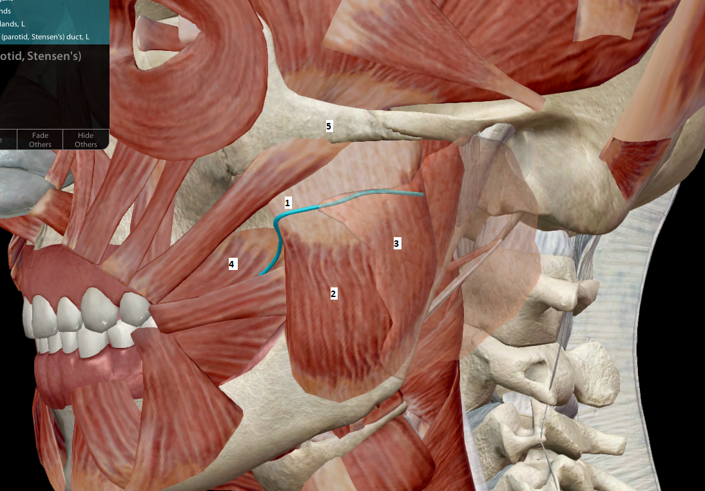
1ductus_parotideus = Stensen-vezeték
▉ Nuhn-Blandin-mirigy?
▉ Waldeyer-féle lymphatikus garatgyűrű?
▉ (Bitchat-zsírcsomó)?
▉ Laimer-membrán & Laimer-3szög?
Laimer-membrán = lig.phrenicooesophageale
Laimer-3szög ➜ nincs stratum_longitudinale ott
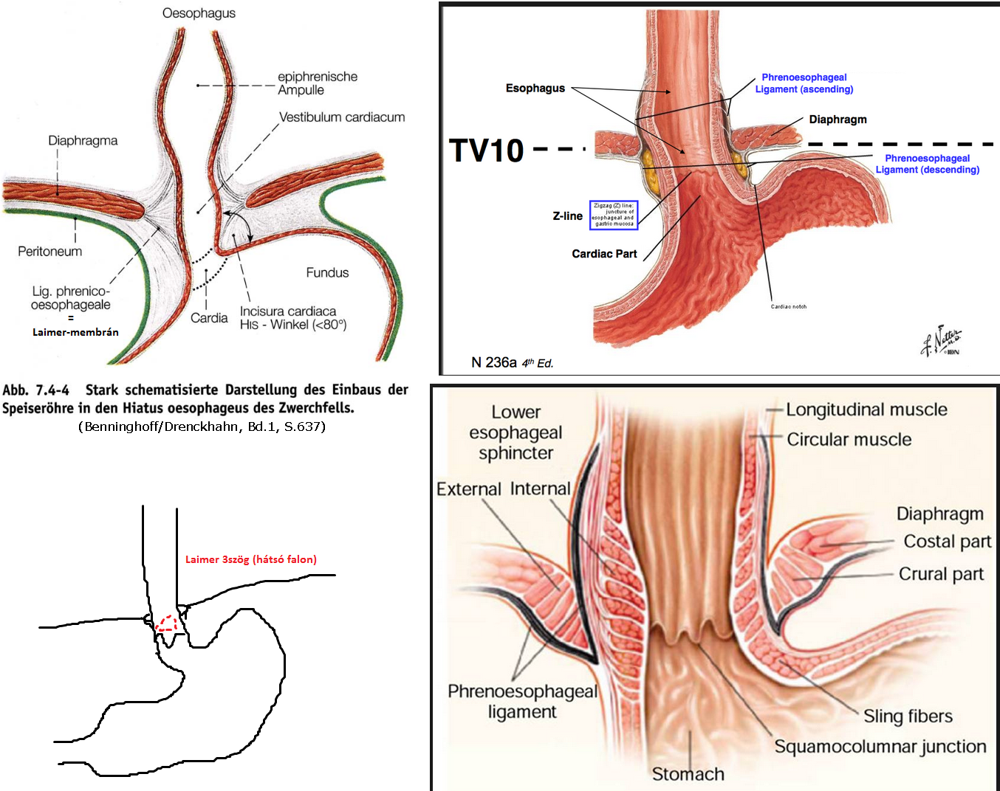
▉ Calot-3szög?
-
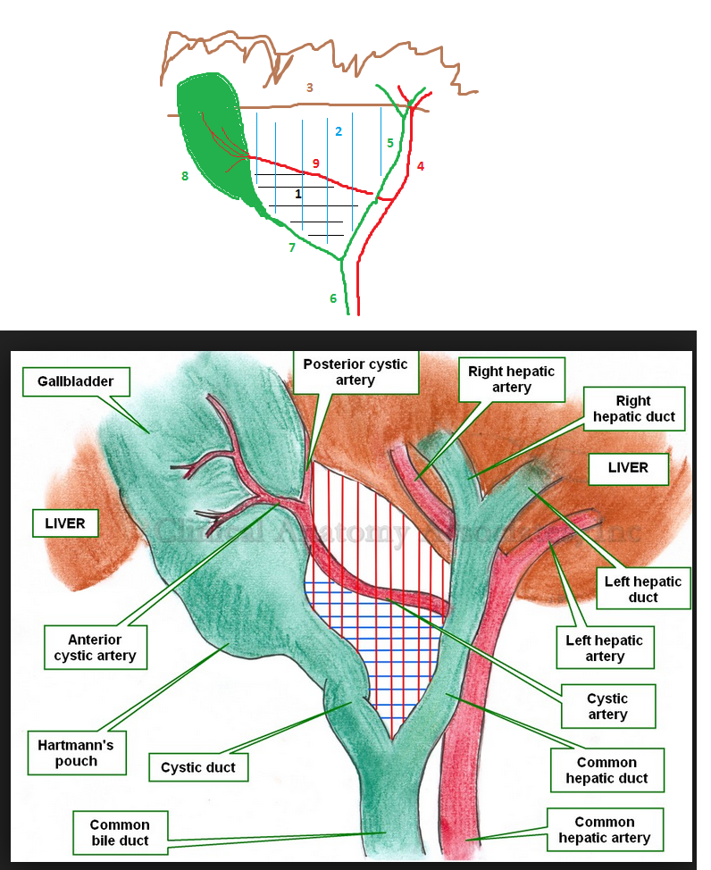
▉ Wharton-vezeték?
▉ Pirogov-háromszög?
-
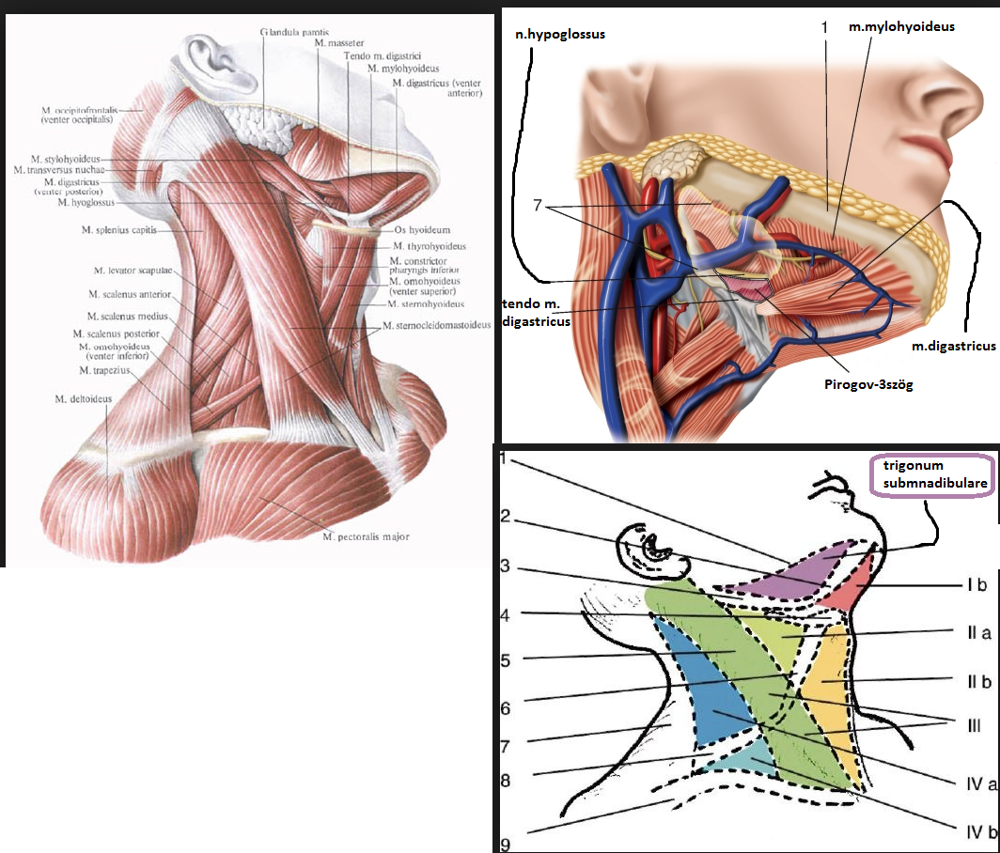
Chorda dorsalis és a mesoderma kialakulása
szakszó a folyamatra? mikor?
- gastrulatio
- 3.hét
mik alakulnak ki a folyamat során?
- csíralemezek
- chorda_dorsalis
- allantois
kiinduló állapot & lényege?
-
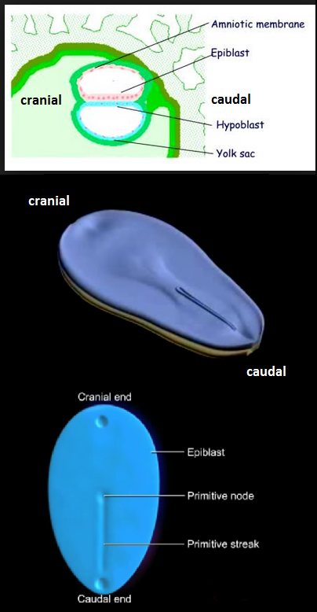
- epiblast & hypoblast érintkezik egymással
- (pajzs alakú cranialisan kicsit vastagabb)
- ----ezután több lépés történik egyszerre-----
- kialakul cuadalisan egy primitiv_streak
, amely középig felvándorol és 1 blastoporusban(=) végződik
- az epiblast sejtek lecserélik a hypoblast réteget ➜ endoderma
- az epiblast sejtek beáramlanak az embriópajzs caudalis részen a 2 réteg közé és így kialakul az intraembrionális_mesoderma
- az intraembrionális_mesoderma oldalt összenő az extraembrionális_mesodermával
- az intraembrionális_mesoderma áramlás folyamatosan tör felfele~lateralisan
- ectoderma és endoderma a folyamat után 2 helyen még közvetlenül kapcsolódik
- membrana_cloaca
- membrana_buccopharyngea
- a membrana_buccopharyngea előtt a mesoderma kialakítja a kezdetleges szívtelepet(=)
- cranialisan megjelenik az embriópajzson a velőlemez(neural_plate) (mint egy papucs) 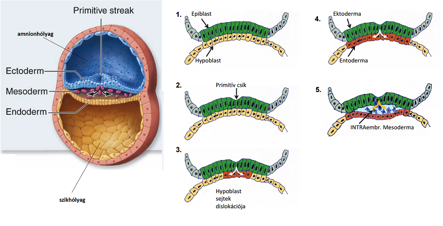
melyik csíralamez miből alakul ki?
- mindegyik csíralemez az epiblastból alakul ki
chorda_dorsalis kialakulás lényege?
- ectoderma sejtek blastoporuson benyomulnak
- blastoporus "allantois irányába" vándorol ➜ chorda_dorsalis végül megnő, és a membrana_buccopharyngea-tól egész a membrana_cloacaig tart
- ---------------
- eleinte összeolvad az alatta lévő hypoblastal és felszívódik az alsó fala
- így kialakul átmenetileg egy csatorna az amnionüreg és szikhólyag között ➜ canalis_neurentericus
- végül a chorda dorsalis bezárul ismét 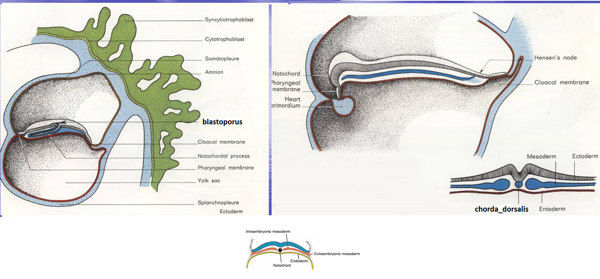
allantois mi?
- szikhólyag hátsó falából, a cloacamembrántól caudalisan kiinduló csőszerő képződmény, mely a tapadónyél-mesodermába nyúlik be
(epiblast részeinek származékai)
- nagyon LOW PRIOR, nincs is kidolgozva (funkc1be van) 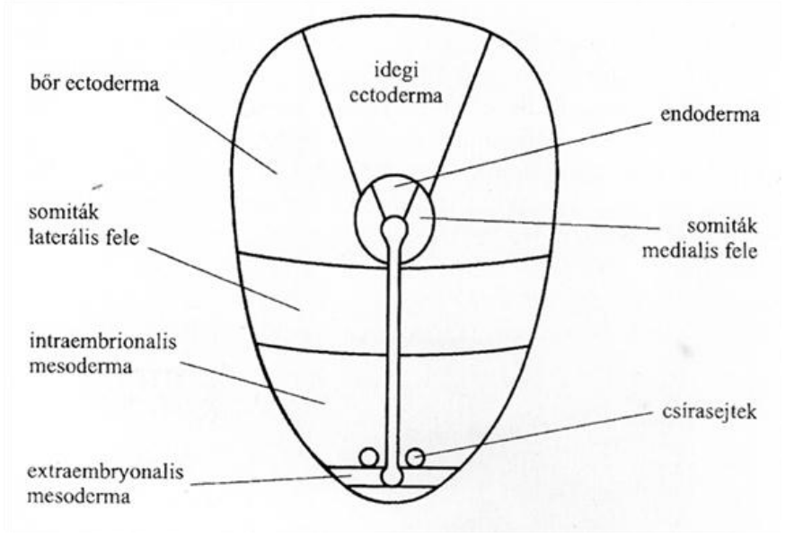
videó
Neurolatio
mely csíralamezből származik az idegrendszer?
- ektoderma
mikor?
- 4.hét
miből fejlődik ki az idegrendszer?
- crista_neuralis + velőcső ➜velőlemezből➜ectoderma
RAJZ lényege + leírása?
-
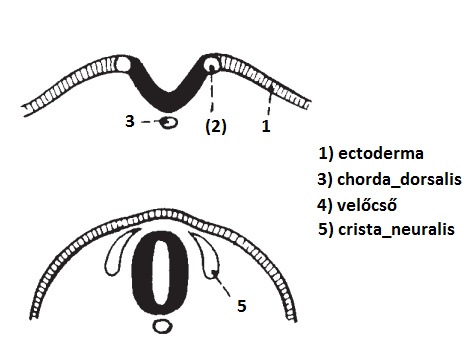
- ektoderma 1része megvastagodik, ez lesz a velőlemez(=)
- a velőlemez két széle kiemelkedik kissé
- a kiemelkedés fokozatosan nő, végül összeolvad ➜ velőcső kialakul
- a folyamat során 2 | egyes velőlemez-sejtek elvesztik a kapcsolatot a velőlemezzel ➜ crista_neuralis így alakul ki
IF "kiinduló+végállapot" [saggital]
kék amnion
rózsaszín trophoblast
szürke extraembrionális_mesoderma
sárga intraembrionális_mesoderma
piros ektoderma
zöld endoderma
barna szívtelep
lila canalis_neuroentericus ➜ chorda_dorsalis
1 amnionüreg
2 membrana_buccopharyngea
3 membrana_cloca
4 allantois
5 testnyél
6 velőcső
7 extramebrionális_cölóma
8 hindgut
9 szikhólyag
10 ductus_omphaloentericus
11 velőlemez = neural_plate
12 chorion
13 elemi_szájöböl
IF "kiinduló+végállapot" [vertical]
- chorion = extraembrionális_mesoderma + trophoblast
- fal ➜ fehérállomány + szürkeállomány ✽
- üreg ➜ agykamrák + canalis_centralis
- neuronok közül azok, melyeknek perikarionja a központi_idegrendszeren kívül helyezkedik el ➜ pl. 1szimpatikus_ganglionsejtek
- spinalis_ganglionokba lévő pseudounipolaris_neuronok (csak ezen típusú neuronok vannak bennük)
- paravertebralis_ganglionokba és praevertebralis_ganglionokba lévő multipolaris_neuronok (csak ezen típusú neuronok vannak bennük)
- Schwann-sejtek & satellita-sejtek
- lágy_agyhártya
- (koponya chondrocranium része) '
- ✽ 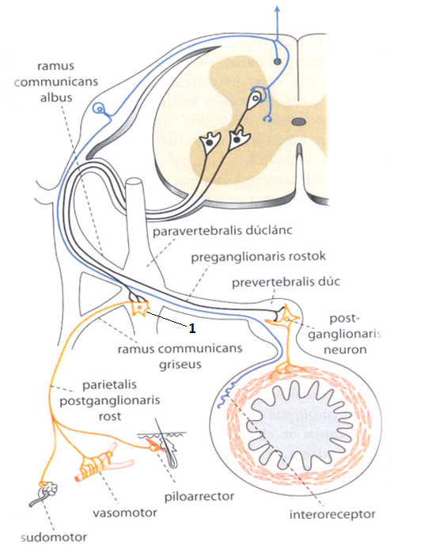
- velőlemezek összezáródása középről indul, és megy felfele & lefele egyaránt
- így eleinte cranialisan és caudalisan még nemzáródik össze
- neuroporus_anterior
- neuroporus_posterior
- neurolatio végén először az neuroporus_anterior záródik be (25.nap)
- majd a neuroporus_posterior is bezáródik (27.nap)
- (4-)5.hét
- neurolatio során kialakult a velőcső
- velőcső üregét ependymasejtek bélelik
- fejlődés során néhol szűkül, másutt tágul, de megőrzi egységességét
- agykamrák ➜ velőcső üregének tágabb részei
- ventriculus_quartus ➜ rhombencephalon ürege
- ventriculus_tertius ➜ diencephalon ürege
- ventriculus_lateralis ➜ hemispheriumok ürege
- velőcső üregének szűkebb részei
- canalis_centralis ➜ gerincvelő ürege
- foramen_interventriculare (Monroi) ➜ átjáró a ventriculus_lateralis és ventriculus_tertius
- aqueductus_mesencephali (Sylvii)
- mesencephalon ürege
- átjáró a ventriculus_tertius és ventriculus_quartus között
- hosszanti
- cirkumferenciális
- sugárirányú
- primer agyhólyagok kialakulása
- secunder agyhólyagok kialakulása
- ezután tovább tagozódnak szekunder_agyhólyagokká
- így prosencephalonnak 2része lesz
- 2db telencephalon
- diencephalon
- illetve a rhombencephalonnak is 2része lesz
- metencephalon
- híd előtelepe
- kisagy előtelepe
- myelencephalon
- isthmus_rhombencephali választja el a mesencephalont a rhombencephalontól
- 3db görbület is megjelenik
- flexura_cervicalis
- flexura_cephalica
- flexura_pontis
- fejlődő agyhólyagokat körülvevő mesenchymából
- szárnylemez
- idegrendszert körülvevő koponya és gerinc csontjainak a csonthártyája is
- velőcső fala gyorsan vastagodik ➜ velőcső ürege összeszűkül 3 canalis_centralissa
- velőcső falát 3 rétegre lehet ilyenkor osztani ➜ 1 + 2 + 4
- 1 neuroepithel-réteg
- 2 zona_spongiosa
- 4 zona_nuclearis
- neuroepithel sejtek intenzíven osztódnak
- a keletkezett sejtek kivándorolnak zona_nuclearis-ba
- az ide (zona_nuclearis) érkezett sejtek differenciálódnak
- ha neuroblast érkezett ➜ neuron lesz
- ha astroblast / oligodentroblast érkezett ➜ astrocyta / oligodendrocyta lesz
- sok beérkező neuroblast következtében megvastagodások jön létre
- ventralisan ➜ 2db 5alaplemez
- dorsalisan ➜ 2db 4szárnylemez
- zona_nuclearis ➜ substantia_grisea
- zona_spongiosa ➜ substantia_alba
- központi_idegrendszert körülvevő mesenchyma
- crista_neuralis
- 1) hypoblast
- 2) epiblast
- 3) amnion-üreg
- 4) primer_szikhólyag
- 5) szekunder_szikhólyag
- 6) szinciciótrophoblast
- 7) citotrophoblast
- 8) embrioblast
- 9) amnion 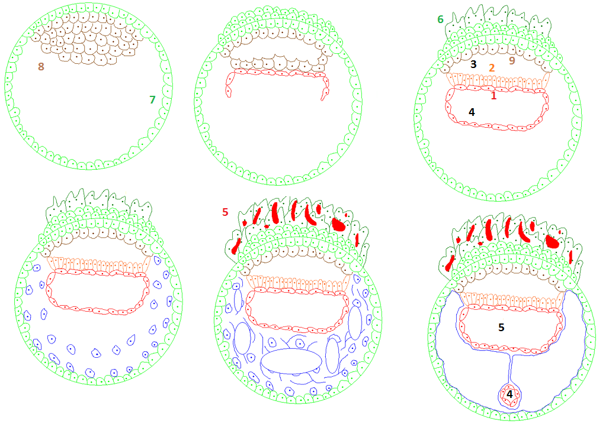
- 1.képen epiblast + hypoblast összeér és kettős réteg
- 2.képen
- membrana_buccophyrangea ➜ elől még mindig összeér az endoderma + ectoderma és csak kettős réteg
- membrana_cloaca ➜ hátul ugyanez
- chorion = extraembrionális_mesoderma + trophoblast
- méh endomentriumának [nyálkahártya] átalakult, functionalis rétege
- 1)decidua_basalis / 2)decidua_capsularis / 3)decidua_parietalis 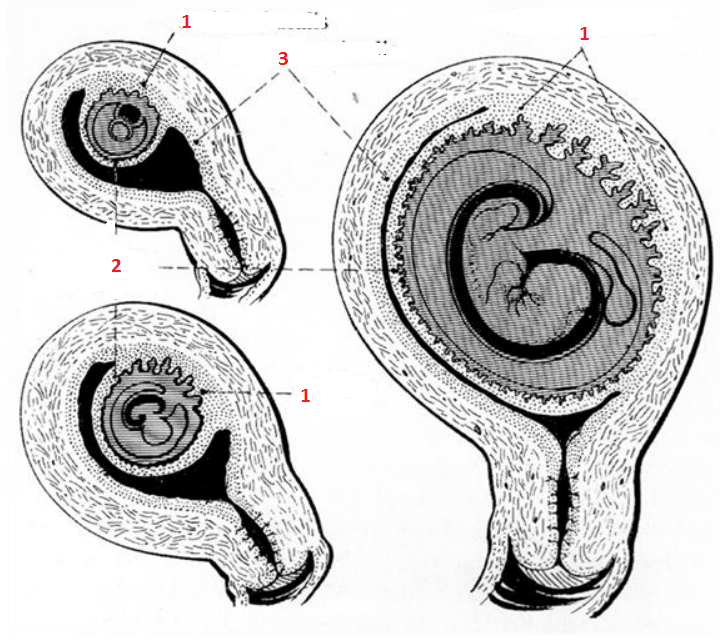
- méhlepény
- placenta_foetalis ("magzati-rész") & placenta_materna ("anyai-rész")
- placenta_foetalis
- chorionlemez ➜ amnion borítja
- A primer ➜ csak trophoblast sejtek alkotják
- B secunder ➜ extraembrionális_mesoderma sejtek is alkotják
- C tertier ➜ magzati erek is vannak benne már
- intervillosus_űr = lacuna ➜ anyai vérrel töltve
- placenta_materna
- basalis lemez
- septum_placenta-k
- decidua-sejtek
- ✽ összes intervillosus_űr felé néző részt ➜ chorionbolyhok, basalis_lemez, septum_placenta-kat
- chorion = külső_magzatburok = trophoblast + extramebrionális_mesoderma sejtek
- chorion_leve / chorion_frondosum 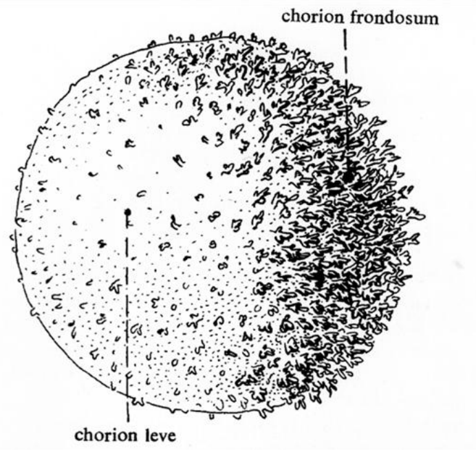
- anyagcsere a magzat és anya között
- hormontermelés ➜ pl?
- barázdálódás
- beágyazódás
- blastula_differenciálódása
- gastrulatio ➜ csíralemezek kialakulnak
- chorda_dorsalis kialakul
- szívkezdemény megjelenik
- erek jelennek meg szikhólyag
- neurulatio
- lefűződés
- méhkürt ampullájában
- 1.hét
- ezalatt osztódik mitózissal ➜ mivel nem nő a mérete, ezért a sejtek egyre kisebbek, míg végül elérik a testi sejt méretet
- zigóta először átalakul szedercsíra(morula) állapotba, majd a blastula (hólyagcsíra) állapotba
- blastula KÉP
- zona_pellucida megszűnik ➜ folyadék áramlik be a szedercsíra sejtjei közé
- felépítés
- trophoblast-sejtek ➜ placenta alakul ki belőle
- embryoblast-sejtek ➜ embrio-teste alakul ki belőle
- blasztocölóma
- (általános fejlődéstan ppt -ben gyönyörű képek vannak róla!)
- decidua ➜ méh endometriumának [nyálkahártya] funkcionális rétege
- zona_pellucida ne legyen
- szincíciotrophoblast
- mátrix_metalloproteináz enzimeket termel, melyek lebontják az endometrium ECM-t ➜ beengedi 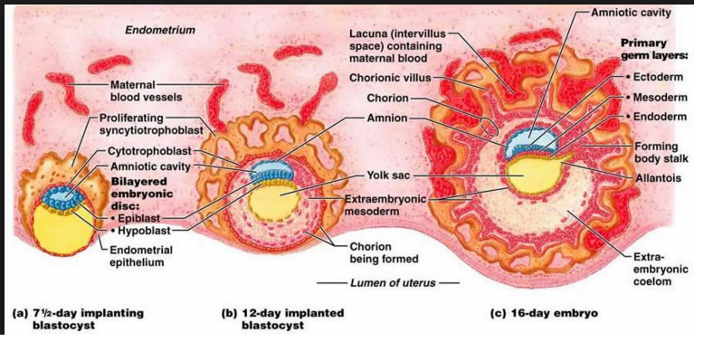
- trophoblast sejtek osztódnak, 2típusuk jelenik meg
- szincíciótrophoblast-sejtek ➜ szincícium [egyesül citoplazmájuk, de sejtmag nem]
- citotrophoblast-sejtek
- belül lévő embrioblast sejtek elfolyósodnak ➜ kialakul a folyadékkal telt amnionüreg
- alatta lévő 2sejtréteg
- hypoblast ➜ legalsó sejtréteg
- epiblast ➜ feljebb lévő
- hypoblast osztódásával kialakul a primer_szikhólyag
- trophoblastok osztódásával extraembrionális_mesoderma sejtek jelennek meg
- extraembrionális_mesoderma sejtek közepe elfolyósodik extraembrionális_cölóma jön létre
- primer_szikhólyag lefűződik alulra, és szekunder_szikhólyag marad fennt
- tapadónyél megjelenik 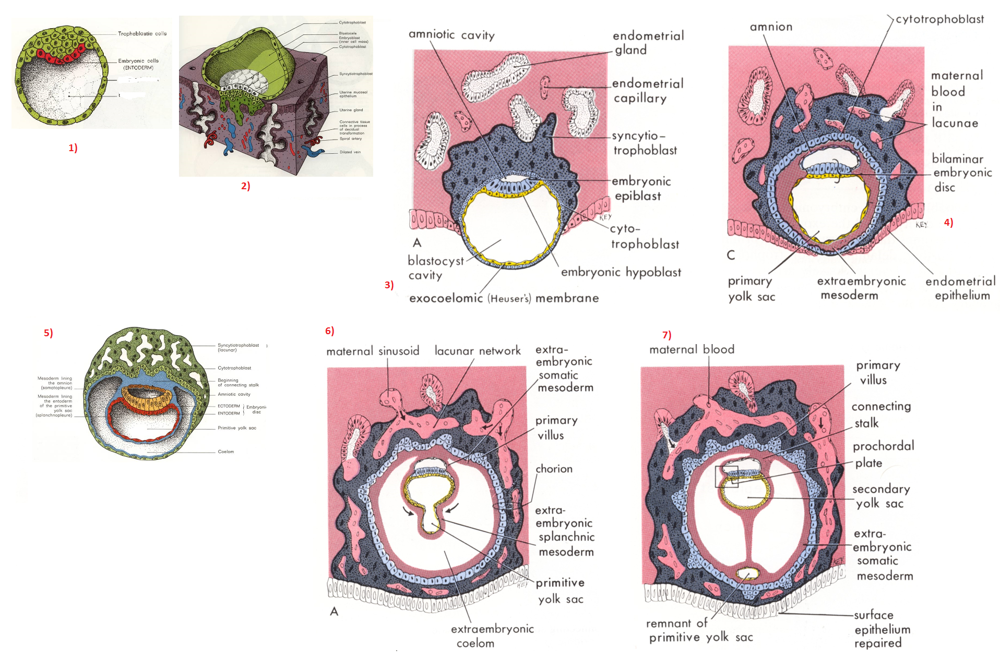
- 2.hét
- extraembrionális_mesoderma sejtekből
- később az amnion befedi a tapadónyelet ➜ köldökzsinórrá alakul [szikhólyagnyél + allantois + erek]
- idegrendszer elkülönülése az ectodermától;
- 4.hét
- ectoderma középen összezáródik ➜ velőcső létrejön alatta ➜ majd elválik ectodermától ➜ 2 dúcléc velőcső mellett ("kinntragadt" ectoderma-sejtek) 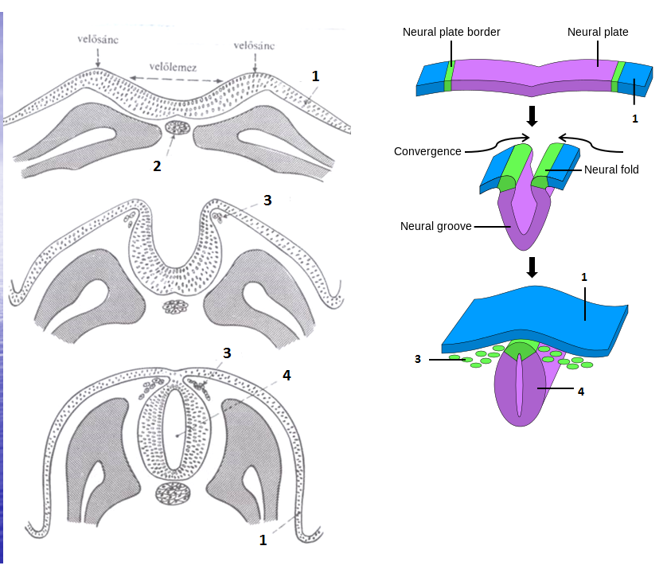
- 4.hét
- amnionhólyag nagyobbodik
- szikhólyag kisebbedik
- mesoderma tagolódik
- oldallemezek ➜
- gononephrotom
- somiták = őscsigolyák ➜ szklerotom / miotom / dermatom
- https://youtu.be/qMnpxP6EeIY
- külső magzatburok = chorion = extraembrionális_mesoderma + trophoblast
- belső magzatburok ➜ amnion
- magzatvíz tölti ki belső magzatburok és magzat közti teret 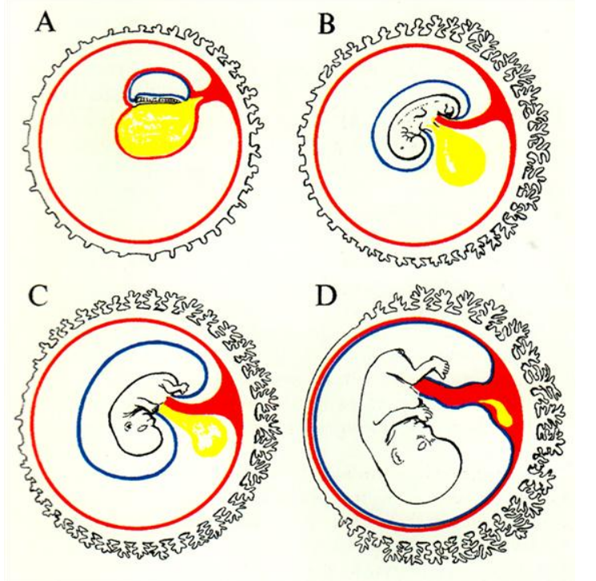
- allantois
- szikhólyag maradvány
- 2arteria + 1vena ➜ artéria "nyomja ki" magzatból a "rossz kaját(CO2 stb)" véna hozza a jót (pont fordítva mint normál esetbe, de ez érthető)
- Wharton-kocsonya
- amnionhám 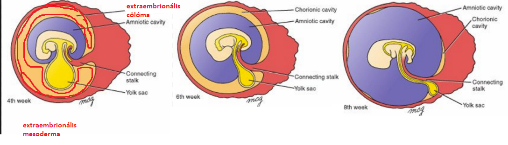
- 3.hét
- mesoderma
- szikkeringés ➜ először a szikhólyagban jelennek meg erek ➜ a.vitellina + v.vitellina
- megjelenik a kezdetleges szív ➜ 2szívcső alkotja
- ez összekapcsolódik a szikerekkel illetve a placentaris erekkel 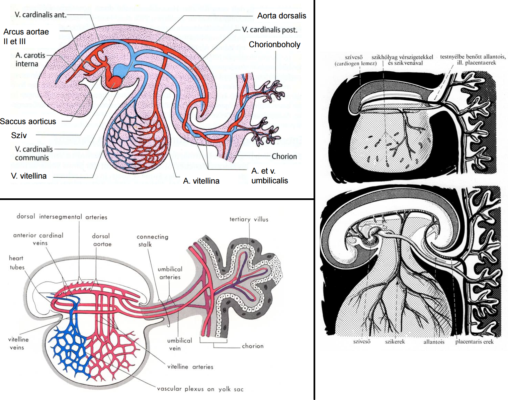
- szikkeringés fokozatosan visszafejlődik és átveszi szerepét a placentáris
- 2a +1v.umbilicalis
- ennek során nem érintkezik közvetlenül anyai és magzati vér
- átjuttat az anya a magzat számára
- antitesteket ➜ passzív immunizáció
- egyes vírusok is átjutnak (kanyaró, rubeola, bárányhimlő)
- extrauterin = méhen kívüli életszakasz ➜ születés után
- intrauterin = méhen beküli életszakasz ➜ születés előtti
- csíraszakasz = blastogenezis ➜ megtermékenyítéstől a beágyazódásig ~első 2 hét
- embriogenezis ➜ beágyazódásig a ~8.hétig
- magzati = fötális szakasz ➜ hátralévő a születésig
- dizigóta = 2petéjű ikrek ➜ külön zigótából származnak
- 2 petesejt termékenyül meg egyidőben, majd külön területen beágyazódnak
- eltérő genetikai kód ➜ nincs nagyobb hasonlóság köztük, mintha külön időben születtek volna
- monozigóta = 1petéjű ikrek ➜ 1 zigótából származnak
- azonos genetikai kód ➜ megtévesztik hasonlítanak egymásra (ujjlenyomat, vércsoport is azonos)
- Dawn-kór
- kromoszómamutáció (kormoszómák száma változik, azon belül egyébként aneuploidia)
- 21. triszómia
- szekunder_oocita meiózis_II_metafázisban van ovulációtól megtermékenyítésig
- minél későbbi ciklusnál történik ez, annál nagyobb az esélye hogy nem jól válnak majd szét
- Turner-szindróma
- kromoszómamutáció (kormoszómák száma változik, azon belül egyébként aneuploidia)
- monosomia ➜ csak X-gonoszóma, egy X gonoszóma hiányzik
- csak nőknél fordul elő
- contergan-botrány
- enantiomer [egymástükörképe] molekulák alkották a gyógyszert
- egyik toxikus, másik csökkenti a fejfájást stb
- terhesek akik szedték, szüléskor meghalt a "csecsemő", vagy végtag nélkül stb. éli életét (számuk ~10.000 volt)
- chondralis csontosodás
- os_occipitale "alja"
- pars_petrosa [os_temporale ➜ pars_petrosa, hallócsontok
- os_sphenoidale
- os_ethmoidale
- concha_nasalis_inferior
- desmalis csontosodás
- összes többi
- kutacsok
- fonticulus_anterior
- fonticulus_posterior
- fonticulus_sphenoidalis
- fonticulus_mastoideus
- kopoltyúívekből
- 1. ➜ rágóizmok
- 2. ➜ mimikai-izmok + processus_styloideus
- sclerotom-ból származik
- lényege
- 1somitában a sclerotom alkotnak 1laza(fennt) + 1tömör(lennt) részt ➜ köztük rés
- kívül a miotom "ível át" 1somitát
- végleges csigolyatalep kialakulása ➜ eredeti somita caudalis tömörebb fele összeolvad az utána következő somita lazább szerkezetű cranialis felével
- köztük a porckorong-telep lesz ezek után
- miotomok mostmár 2csigolyatelepet "ívelnek"
- 2.hónapban porctelepek
- 3.hónapban kezdődik a csontosodás 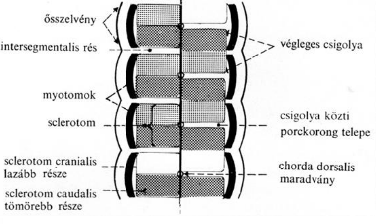
- bőr ➜ epidermis + bőrfüggelékek(szőr,mirigy);
- velőcső ➜ központi_idegrendszer;
- dúcléc = ganglionléc ➜ környéki_idegrendszer, egyes koponyacsontok;
- somiták
- gononephrotom;
- oldallemezek ➜ 4) somatopleure / 5) splanchnopleure; 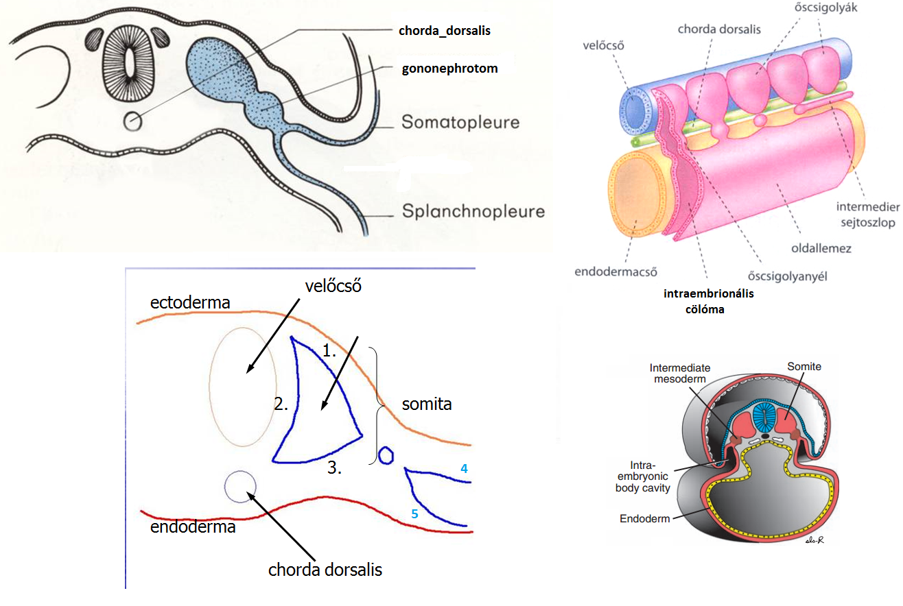
- dermatom ➜ kötőszövet a dermis + tela_subcutan (bőr középső+alsó rétege)
- miotom ➜ törzsizmok;
- szklerotom ➜ gerincoszlop (támasztószövet: csont-porc) ("skeleton"); 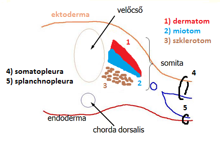
- végtag ➜ csontok + izmok;
- simaizmok;
- vérkeringés;
- urogenitális szervek;
- bélcsatorna hámja
- légutak hámja
- 1.kopolytúív ➜ rágóizmok ✽
- 2.kopolytúív ➜ mimikai_izmok ✽
- miotom ➜ törzs izmok
- oldallemez ➜ végtag izmok
- nucleus_pulposus (porckorong kocsonyás közepe) ✽
- endoderma
- vesica_urinaria, kivéve trigonum_vesicae része
- ♀ urethra
- ♂ urethra, kivéve pars_spongiosa része
- mesoderma ➜ többi
- mesoderma ➜ gononephrotom (=)
- endoderma ➜ sinus_urogenitalis
- trigonum_vesicae ➜Wolff-cső➜gononephrotom➜mesoderma
- ♂ pars_spongiosa(urethra)
- egész, kivéve fossa_navicularis ➜ivarredő➜???
- fossa_navicularis ➜ivargumó (hámja)➜ectoderma
- 4.héten elején indul meg (és játszódik le lényegében, de metanephros fejlődése folytatódik hosszaban majd)
- általános dolgok
- aortából erek mennek medialisan melyek végén glomerulus alakul ki
- a vesetelepek fokozatosan alakulnak ki fönntről-lefele, majd elsorvadnak ugyanilyen sorrendben
- pronephros KÉP-külső_glomerulus
- még szelvényezett
- még egybenyílik a cölómával ()
- mesonephros KÉP-belső_glomerulus
- már nem nyílik egybe a cölómával
- a gononephrotom medialis része a glomerulust körülveszi ➜ gononephrotom alkotja így a tubulus(csatorna) részét
- L1-3 része megmarad (nem sorvad el)
- ductus_mesonephricus
- vesetelepek és ♂_nemi_szervek eredeti közös kivezetőcsöve
- a gononephrotomok dorsolateral részén a hám megvastagodik és lefele hajlik
- így az alatta lévő gononephrotommal összenő
- így alakul ki a Wolff-cső mindkét oldalon
- L5 szelvény magasságában előrehajlik benyílik a cloacába
- L3-5 szelvény alakul ki (területen lévő gononephrotomból)
- ureterbimbó ➜ Wolff-cső kitüremkedése (KÉPen fentebb látszik)
- tovább növekszik dorsalisan, és a gononephrotom így sapkaszerűen ráfekszik
- ebből lesz
- ureter
- pelvis_renalis
- gyűjtőcsatornák
- elágazódása
- elsődleges ágai ➜ calyx_renalis_major
- másodlagos ágai ➜ calyx_renalis_minor
- további ➜ gyűjtőcsatornák
- Wolff-csőtől elválik közben
- ➜ direkt szájadzik a cloacaba, Wolff-cső fölött!!!
- későbbi fejlődés során az ostium_urethrae_internum jelentő beszűkülés a két benyílás közé kerül, és ennek megfelelően az ureter a vesica_urinariaba, viszont a Wolff-csőből alakult férfi nemzőcsatornaszakasz az urethraba nyílik
- minden ág végét a metanephrogen szövet sapkaszerűen körülveszi
- sapkaszerű metanephron széléből közben golyócskák válnak le
- ezen golyócskákból alakulnak ki a nephronok
- mesonephros & metanephros esetében történik KÉP-E
- meso/metanephrogen szövet golyócskákká tömörül, majd ezek központi sejtjeik felszívódásával hólyagokká alakulnak át
- hólyag lateralis része ➜ megnyúlik, egy-két kanyarulatot képezve tubulusokká alakul
- hólyag medialis része ➜ kialakul capsula_glomeruli_Bowman
- ✽
- fossa_iliacában fejlődnek ki
- hossznövekedése miatt kerülnek magasabbra, a helyükre
- "felszállás" során más-más arteriából kapják a vérellátásukat ➜ ez magyarázhatja a végleges a.renalis gyakori rendellenes lefutását, elágazódását
- cloaca = allantos 1szakasza intraembrionálisan + utóbél-rectum szakasza
- septum_urorectale fokozatosan kettéválasztja a cloacat ➜ allantoist az utóbél-rectum szakaszától
- végül tovább nőve teljesen kettéválasztja a cloacát
- sinus_urogenitalis (ventralis)
- rectum (dorsalis)
- 4-7.hét forrás ✽ (egyéb kép)
- köldökzsinóron keresztül távoztatja a "húgyhólyagból a vizeletet"
- lig.umbilicale_medianum lesz belőle (felnőttben)
- cranialis (vesical) részéből ➜ veica_urinaria hámja
- középső (pelvic) részéből
- ♀ urethra hámja
- ♂ urethra összes része kivéve pars_spongiosa (hámja)
- ♂ prostata mirigyei
- alsó (phallic) részéből ➜ ???
- ➜ emiatt endodermás eredetű az urethra & vesica_urinaria
- testis/ovarium
- az uropoeticus fejlődésnél már említett mesonephros, az L1-L3 területen megmarad
- itt a mesonephros által a cölóma hátsó falán képzett redő a plica_mesonephridica ✽
- ennek medialis részén lévő kitüremkedés a plica_genitalis
- itt alakulnak ki a gonádtelepek, és indul meg belőlük a gonádok fejlődése
- utóbél_dorsalis_falából vándorolnak fel a 3.-6.hét között a bélcsőn keresztül
- bélcsőből a mesogastrium_dorsale-n keresztül jutnak át a plica_genitalishoz
- ♂ gubernaculum_testis
- szalag, mely a L1-L3 szelvényben lévő testist összeköti az ivarsánccal
- ez fogja lehúzni
- maradványa ➜ lig.scrotale
- ♀ "gubernaculum" ➜ a kialakuló uterus két részre osztja
- lig.ovarii_proprium
- lig.teres_uteri
- ductus_mesonephricus = Wolff-cső
- ductus_paramesonephricus = Müller-cső
- Wolff-cső van dorsalisabban (és fennt még medialisabban)
- 2 Müller-cső (medence-tájékán) összekapcsolódik
- tractus_genitalis ➜ egyesült Müller-csövek és oldalt szorosan hozzáfekvő Wolff-csövek kötege
- lennt a sinus_urogenitalis-ba szájadzanak
- magzati here által termelt férfi nemi hormonoktól, ugyanis..
- tesztoszteron szükséges a Wolff-cső fejlődéséhez
- AMH pedig gátolja a Müller-cső fejlődését
- tuba_uterina'
- uterus ' vagina felső 1/3a
- utriculus_prostaticus marad meg (17)

- '
- ductus_epididymidis
- ductus_deferens
- vesicula_seminalis'
- ductus_ejaculatorius '
- genitális-gumó (ivargumó) /hámja ectodermális/
- 2db genitális-sánc ()
- 2db genitális-redő (=)
- ivarsáncok csak elül & hátuls nőnek össze ➜ comissura_labiorum ant/post
- labium_majus_pudendi
- ivarredők csak hátul nőnek össze ➜ frenulum_labiorum_pudendi
- labium_minus_pudendi
- corpus_spongiosum_penis (ivargumó mesenchymájából)
- glans_penis (ivargumó ectodermális hámjából)
- testis levándorlása a kezdeti helyéről a scrotumba
- hátsó hasfalon retroperitoneálisan az L1-L3 szelvény tájékán
- retroperitoneális végig, és utána is az marad
- 2.hónapban megindul és 3.hónapra leszáll canalis_inguinalisba
- itt megáll egész a 7.hónapig ➜ akkor továbbmegy, és elfoglalja végső nyughelyé
- gubernaculum_testis nevű szalag "húzza le"
- leszállása során a here áthalad a canalis inguinalison, és eközben maga előtt türemíti a hasfal összes rétegét
- ennek megfelelően a here a hasfal valamennyi rétegéből álló zsákszerű burokrendszerben foglal helyet
- De nemcsak a here, hanem a leszálláskor maga után vont erei, idegei és kivezető csöve (ductus_deferens) is benne vannak a herét körülvevő burokrendszer vékonyabb nyélszerű folytatásában ➜ ductus_deferens és a vele haladó ér–ideg képletek egy kb. kisujjnyi, kerek átmetszetű zsineget képeznek, amelyet ondózsinórnak (funiculus_spermaticus) nevezünk
- processus_vaginalis(peritoneum)-ból fejlődik a tunica_vaginalis_testis
- processus_vaginalis a canalis_inguinalison keresztül már a here leszállása előtt lenyúlik, és a here ténylegesen e nyúlvány mögött, annak hátsó falát maga előtt bedomborítva, száll le a herezacskóba
- születés tájékán a tunica_vaginalis összeköttetése a peritonealis üreggel elzáródik
- oogonium(2n2c) osztódik mitózissal
- primer_oocitákká(2n4c) alakulnak, így maradnak pubertáskorig utóbbi a meiózis-I profázisában állt meg
- ciklusonként[~28nap] 1 primer_oocita meiózisa megy végbe
- primer_oocita ➜ meiózis I ➜ szekunder_oocita (nagy) + polocyta (kicsi)
- szekunder_oocita ➜ meiózis II metafázisáig jut el
- ovulációnál e formában lökődnek ki ➜ csak megtermékenyítés esetén folytatódik
- megtermékenyítés ➜ meiózis II befejeződése ➜ ovum=petesejt (nagy) + polocyta (kicsi)
- zona_pellucita
- membrana_vitallina
- corona_radiata
- renalis_agenesis ➜ vese nem fejlődik ki
- ha csak 1ik oldalon, a máik pótolja
- ha 1iksem, életképtelen
- ectopiás vese ➜ vese "felszállás" elmarad
- patkóvese ➜ 2vese összeolvadása
- polycystás vese
- tubuli_nephroni és gyűjtőcsatornák nem érnek össze
- ➜ nephronok kitágulnak különböző méretű, folyadéktartalmú hólyagokká
- Ha bizonyos korig a here magától nem száll le, hormonkezeléssel() igyekeznek leszállásra bírni
- Ha ez eredménytelen, műtéttel kell lehozni, egyébként az illető elveszíti nemzőképességét
- gonád fejlődési_rendellenességei következtébeni intersexualis_állapot
- ivari_kromoszómaszám normális
- ivari_kromoszómaszám nem normális
- genitalis_csatornák és a külső_nemi_szervek fejlődési rendellenessége
- genetikai (chromosomalis) meghatározottság
- gonád + genitalis_csatorna + külső_nemi_szervek
- hormonképzés
- másodlagos nemi jellegek
- psychosexualis magatartás
- hermaphroditismus verus ➜ here és petefészek is van (nem feltétlen épek)
- pseudohermaphroditismus ➜ genitalis_csatorna vagy külső_nemi_szervek nem felelnek meg a kromoszómális nemnek
- masculinus ➜ kromoszóma XY & gonád = testis DE! külső_genitálék női jellegűek
- pl. AIS ➜ hím nemi hormonra való érzéketlenség
- ennek következtében a here hiába termeli őket, a Müller-cső fog kifejlődni és a Wolff-cső sorvad el
- további következménye hogy a külső_nemi szervek, másodlagos nemi jellegek is nőiek lesznek
- (ez a CAIS, azaz Morris-syndroma (van részleges is) ➜ ez volt a House-részben)
- femininus ➜ kromoszóma XX & gonád = ovarium DE! külső_genitálék férfi jellegűek
- pl. adrenogenitalis syndroma ➜ oka a mellékvesekéreg túlzott androgénképzése
- pl. Klinefelter-syndroma ➜ XXY (gyakorisága ~750 férfiszületésből 1)
- gonad hyalinosan degenerált tubulusokat tartalmazó here, amelyben spermiumok nem képződnek
- testalkat inkább nőies, gyakori az emlőtájék megnagyobbodása (gynaecomastia)
- egyén férfinak tartja magát
- pl. Turner-syndroma-csoport ➜ X0
- ivarsejtek már az embryonalis korban elpusztulnak, és a születéskor a petefészek helyén csak kevés kötőszövet található, amelyben tüszők nincsenek
- belső és a külső női nemi szervek nőiesek, de felnőttkorban is infantilisak(fejletlen,éretlen) maradnak
- nőknél pl. Müller-csövek tökéletlen egyesülése következtében...
- uterus kettőzöttségének különböző fokozatai
- vagina hiányozhat
- férfiaknál pl. hypospadiasis ➜ ivarredők tökéletlen egyesülése következtében az urethra pars_spongiosa részének alsó fala egészben vagy egyes helyeken nyitva marad
- Vylucovani_Rozmnozovani_vyvoj_eng.pdf ➜ pl. lennti kép
- 1processus_frontalis
- 2processus_maxillaris
- 2processus_mandibularis
- 5-8.hétig
- kialakul 1-1 orrplacod = ectoderma vastagodás ()
- ezek besüllyednek ➜ létrejön a saccus_nasus
- saccus_nasus körül az ectoderma megvastagszik, és így kialakul a processus_nasalis medialis/lateralis
- 2-2 proc.nasalis a későbbi orrnyílást veszi körül
- processus_maxillarisok is egymás illetve proc.nasalisok felé nőnek
- ductus_nasolacrimalis
- processus_maxillaris éss processus_nasalis_lateralis találkozásánál a hámréteg mélybe süllyed majd csővé alakul
- ez fogja a könnyet a szemüregből az orrüregbe vezetni
- processus_maxillaris összenő a processus_nasalis_medialisal
- 2 processus_nasalis_medialis is összenő egymással
- orrhát ➜processus_nasalis_medialis
- orrcsúcs ➜processus_nasalis_medialis
- orr oldalsó része ➜processus_nasalis_lateralis
- labium_superius
- philtrum ➜ processus_nasalis_medialis
- többi ➜ processus_maxillaris
- labium_inferius ➜processus_mandibularis
- os_incisivum ➜processus_nasalis_medialis
- arc felső része ➜processus_maxillaris
- arc alsó része ➜processus_mandibularis
- áll ➜processus_mandibularis
- szaglóhám ➜orrplacod(ectoderma)
- stomodeumot garattól
- 4.héten megszűnik
- primer_szájpad ➜ először az os_incisivum fejlődik ki a processus_nasalis_medialisból
- septum_nasi - processus_nasalis_medialis származéka - középről lenő és egészen leér a nyelvig
- nyelv két oldalán saggitalis állású processus_palatinus fejlődik ki a processus_maxillarisból
- nyelv a szájfenékkel együtt ezután mind mélyebbre kerül ➜ 2 processus_palatinus kikerül a nyelv mellől, és csapóajtószerűen felemelkedik
- szekunder szájpad ➜ 2 processus_palatinus végül összenő foramen_incisivum előtti résszel / egymással / septum_nasival
- orrplacodok mélybe süllyedésekor kialakul a saccus_nasus
- membrana_oronasalis ➜ szájüreg és saccus_nasus közti rész
- ez átszakad és a stomodeum-al összeköttetésbe kerül egészen addig míg szájpad ki nem fejlődik
- ----sinus_paranasales
- születéskor apró sinus_maxillaris
- születés után 1elülső-rostasejt odavándorol és elkezdi kialakítani sinus_frontalis-t
- születés után 1hátulsó-rostasejt odavándorol és elkezdi kialakítani sinus_sphenoidalis-t
- pubertáskorra alakulnak ki végül
barna amnion
kék mesoderma
piros chorda_dorsalis
zöld ektoderma
narancs endoderma
1 ✽
2 oldallemezek
3 amnion-üreg
4 szekunder_szikhólyag
5 velőbarázda
6 () cölóma
7 velőcső
8 somita 
9 gononephrotom
10 bélcsatorna
11 somatopleura
12 splanchnopleura
13 crista_neuralis 
velőcső üregéből és falából mi lesz?
mik fejlődnek ki crista_neuralisból?(3)
tehát azt lehet mondani, hogy a perifériás_idegrendszer érző része fejlődik ki belőle ➜ azonban NEM lehet azt mondani, hogy az egész perifériás_idegrendszer fejlődik ki belőle!! (ugyanis mozgató része nem!) ➜ pl. n.spinalisban ugyan ott vannak a pseudounipolaris neuronok melyek dúclécből származnak DE! ottvannak a cornu_anteriusban lévő motoneuronok axonjai is melyek velőcső eredetűek §
video
(megjegyzés)
Magzatburkok kialakulása és a köldökzsinór
Velőcső korai tagozódása és differenciálódása
mikor?
előzmény? (1)
velőcső üregének sorsa?
velőcső differenciálódásának fő irányai?(2)
hosszanti_differenciálódás
folyamat felosztása?
rajz primer agyhólyagok kialakulása?
rajz szekunder agyhólyagok kialakulása? FIX! baloldali ábrán a diencephalon nemjó!, hisze felül lamina_terminalis(telencephalon) van!
összegzés, miből-mi lesz?
| primer_agyhólyag | szekunder_agyhólyag | legvégül |
|---|---|---|
| prosencephalon | 2db telencephalon | 2db hemispherium |
| diencephalon |
||
| mesencephalon | ||
| rhombencephalon | metencephalon | pons |
| cerebellum | ||
| myelencephalon | medulla_oblongata | |
agyburkok miből alakulnak ki?
kisagy mely lemezből származik?
dura_mater kiterjedése?(LP)
cirkumferenciális_differenciálódás
gerincvelő fejlődése

~~~~~~~~~következő lépés~~~~~~~~~
sulcus_limitans (képzeletbeli folytatása) a határ köztük
| ventral ➜ dorsal | |||
|---|---|---|---|
| alaplemez | szárnylemez | ||
| 10 SM neruon-oszlop ✽ | 9 VMÁ neruon-oszlop ✽ | 11 VSÁ neruon-oszlop | 12 SS neuron.oszlop |
| miotom eredetű vázizmokat innervál | zsigerek(simaizom) + mirigyeket innervál | zsigerekből jövő infókat fogad | bőr,vázizom,ízületekből jövő infókat fogad |

gerincvelő ➜ miből lesz a szürkeállomány és fehérállomány?
gerincvelő ➜ miből lesz a mesoglia(=)?
gerincvelő ➜ miből származnak a spinalis_ganglionok?
gerincvelő ➜ cauda_equina vezér_2.2?
mix
IF feji plakódok (lowPrior)
-
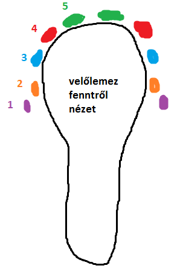
1 epigangliális-plakód ➜ X + XI
2 akusztikus-plakód
3 trigeminus-plakód
4 lencseplakód
5 ebből lesz ➜ hypophysis + orr + Jacobson-szerv
kidolgozásra váró képek + értelmezésük (Langman is kell hozzájuk)
-
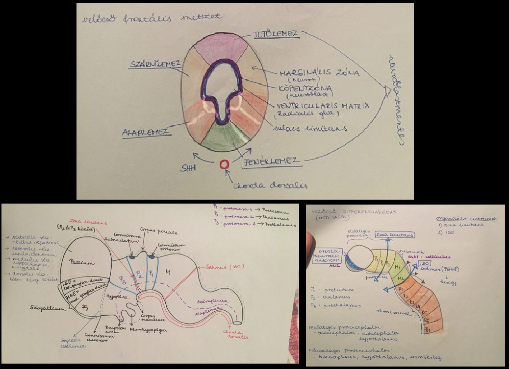
I.félév
rajzok
▉ 1.hét ➜ vertical-metszet
▉ 2.hét ➜ vertical-metszet
▉ 3.hét ➜ saggital-metszet

4.hét "kiinduló+végállapot" ➜ vertical-metszet
barna amnion
kék mesoderma
piros chorda_dorsalis
zöld ektoderma
narancs endoderma
1 ✽
2 oldallemezek
3 amnion-üreg
4 szekunder_szikhólyag
5 velőbarázda
6 () cölóma
7 velőcső
8 somita 
9 gononephrotom
10 bélcsatorna
11 somatopleura
12 splanchnopleura
13 crista_neuralis 
Placenta
▉ mi a decidua? részei?
▉ mi a placenta? fő részei?
▉ előzőek további részei?
chorionbolyhok ➜ fajtái?
tapadóbolyhok ➜ átérnek a basalis_lemezig
▉ milyen sejtek alkotják a placenta_materna-t?
▉ mit borít szinciciotrophoblast?
▉ chorion alkotói? részei?
▉ placenta szerepe?
milyen események játszódnak le?
▉ 1.hét?
▉ 2.hét?
▉ 3.hét?
▉ 4.hét?
mix
megtermékenyítés
hol?

▉ barázdálódás ➜ mikor? hol-hogyan mozog? lényege?

▉ beágyazódás ➜ mikor? 1)hol? 2)feltétele? 3)mi jut be a méh falába először? 4)hogyan jut be?
2.hét
▉ blastula_differenciálódása ➜ mi történik?
▉ tapadónyél ➜ mikor jelenik meg? miből származik? mi lesz vele?
▉ Neurulatio ➜ mi? mikor? lényege?
▉ Lefűződés ➜ mikor? lényege?
▉ Magzatburkok ➜ melyek? mi tölti ki?
▉ köldökzsinór ➜ alkotói?
▉ Magzati keringés kezdeti formái ➜ mikor? miből alakul ki? neve?
▉ placentaris keringés ➜ milyen anyagok jutnak át?
▉ intrauterin élet szakaszai ➜ mi az intrauterin életszakasz? mely részeit különböztetjük meg?
▉ ikerképződés ➜ típusai? chorion/amnion/placenta - közös/külön típusai?
▉ fejlődési_rendellenességek ➜ 3pl.? chorion/amnion/placenta - közös/külön típusai?
▉ Koponya fejlődése ➜ 2féle fejlődéstípus? mik származnak belőlük? kutacsok újszülöttben? 1-2.garatív(kopoltyúív) származékai?
▉ gerinc fejlődése ➜ miből számarzik? lényege? mikor alakul portelep? mikor kezd el csontosodni?
származékok?
▉ ectoderma?
▉ mesoderma közvetlen származékai?
általános ➜ minden kötő-, támasztó-, izomszövet; urogenitális szervek;
somiták?
▉ oldallemezek?
▉ gononephrotom?
▉ endoderma?
▉ vázizmok származása? ☯
▉ chorda_dorsalis-ból?
(mix képek)
UroGenital
videók
uropoeticus lényege
▉ mely csíralemezből származik?
▉ előbbiek konkrétabban miből származik?
-
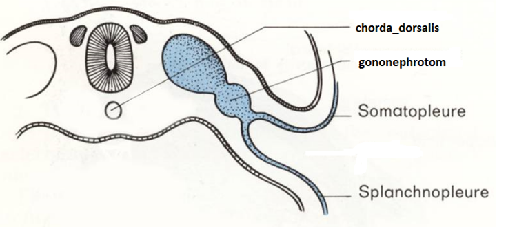
▉ vesetelepek ➜ típusai? mikor? hol?
-
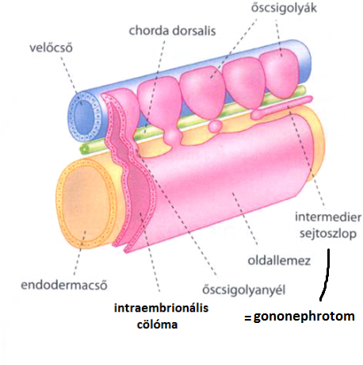
| vesetelep | kialakulása időben (relatív) | kialakulása helyben |
|---|---|---|
| pronephros (elővese) | először | legcranialisabb=() ➜ nyaki szelvények |
| mesonephros (ősvese) | másodszor | középen ➜ Th1-L3 szelvények |
| metanephros (maradandó vese) | utoljára | legcaudalisabb ➜ L3-5 szelvények |
▉ pronephros & mesonephros fejlődése?
▉ Wolff-cső ➜ latinul?
▉ Wolff-cső ➜ definíció?
▉ Wolff-cső ➜ kialakulása?
▉ metanephros kialakulás?
-
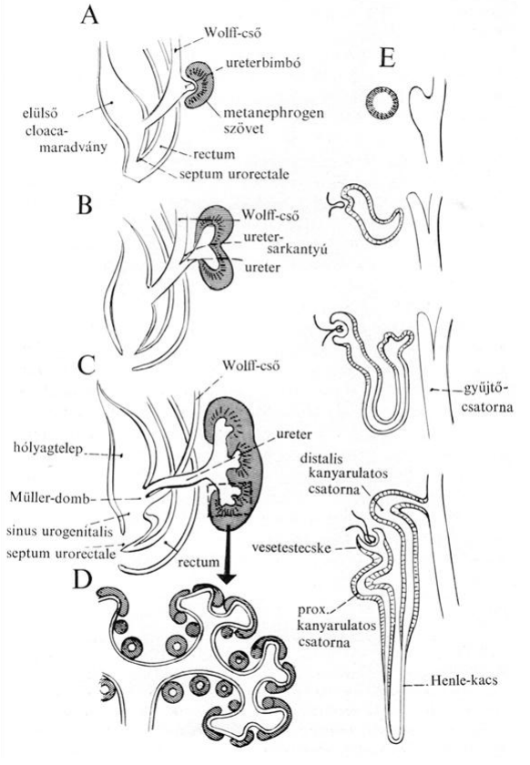
▉ nephron kialakulás?
▉ vese "felszállás"?
"cloaca-térség"
▉ mi a cloaca?
▉ cloaca sorsa? mikor zajlik?
-
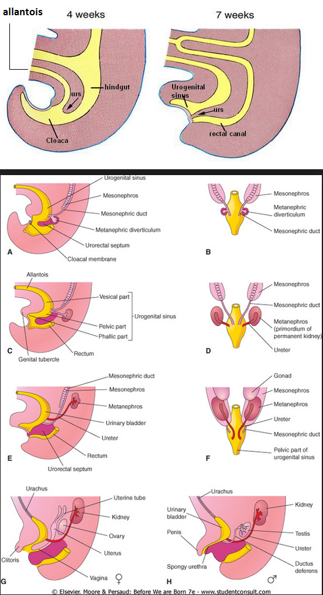
▉ allantoisból mi lesz így? ✽
| kezdeti részek | mi lesz belőle |
|---|---|
| "köldökzsinóri része" | urachus |
| "cloaca-része" | sinus_urogenitalis |
▉ urachus functio? mi lesz belőle? ✽
▉ sinus_urogenitalis-ból mi lesz?
gonádok fejlődése
▉ mik a gonádok?
▉ gonádtelepek?
▉ gonádtelepet alkotó sejtek ➜ típusa? functiojuk?
| sejt neve | functio ➜ ebből lesz |
|---|---|
| gonocyták (=) ➜ vándorlással kerülnek ide | ♂spermatogonium ♀oogonium |
| mesothel-sejtek ➜ cölóma epitheliuma ✽ | ♂tubulus_seminiferus & rete_testis & Sertolli-dajkasejt ♀folliculus |
| mesenchyma-sejtek ✽() | ♂Leydig-sejt ♀ovarium stroma-ját |
▉ gonocyták származása ➜ honnan? mikor? hogyan?
▉ gubernaculum_testis ➜ mi? mi lesz belőle? női megfelelőt is!
nemi szervek fejlődése
belső nemi szervek fejlődése
mikből fejlődnek ki?
-
a genitális csatornákból:
topográfiájuk? mibe ömlenek?
genitális csatornák sorsa mitől függ?
genitális csatornák származékai?

| nő | férfi | |
|---|---|---|
| 5 Müller-cső |
|
elsorvad nagyrésze, maradányaként az
|
| 4 Wolff-cső | ureter ' | |
| többi része elsorvad ' |
|
|

{kind=link}
{kind=link}
{kind=link}
{kind=link}
{kind=link}
{kind=link}
{kind=link}
{kind=link}
{kind=link}
{kind=link}
{kind=link}
{kind=link}
{kind=link}
{kind=link}
{kind=link}
{kind=link}
{kind=link}
{kind=link}
{kind=link}
{kind=link}
{kind=link}
{kind=link}
{kind=link}
{kind=link}
{kind=link}
{kind=link}
{kind=link}
{kind=link}
{kind=link}
{kind=link}
{kind=link}
{kind=link}
{kind=link}
{kind=link}
{kind=link}
{kind=link}
{kind=link}
{kind=link}
{kind=link}
{kind=link}

külső nemi szervek fejlődése
▉ mikből fejlődnek?
külső_nemi_szervek_telepéből ➜ részei:
▉ RAJZ mik lesznek belőlük?
| miből | női | férfi |
|---|---|---|
| 25 genitális-gumó | clitoris | 2db corpus_cavernosum_penis |
| 26 2db genitális-sánc |
|
ivarsáncok összenőnek! ➜ scrotum |
| 27 2db genitális-redő |
|
ivarredők összenőnek!
|
{kind=link}
♂ descensus_testiculorum
▉ mi?
▉ kezdeti helye?
▉ levándorlás során milyen a hashártyaviszonya?
▉ időpontja?
▉ miért vándorol le?
▉ következménye?
▉ tunica_vaginalis_testis kialakulása?
{kind=link}
ivarsejtképzés
oogenezis
fejlődő embrió
pubertáskorban
petesejt 'külső részei'?
{kind=link}
fejlődési rendellenességek
▉ uropoeticus?(4)
▉ rejtettheréjűség?
▉ genitalisok csoportosítása?
▉ intersexualis állapot mi?
ha az ember nemének tényezői nem mutatnak összhangot ➜ ezek
▉ ivari kromoszómaszám normális?
▉ ivari kromoszómaszám nem normális?
▉ genitalis csatornák és a külső nemi szervek fejlődési rendellenességei?
források
{kind=link}
DigaResp
arc
▉ mikből fejlődik?
stomodeum=szájöböl körüli 5nyúlványból
{kind=link}
{kind=link}
{kind=link}